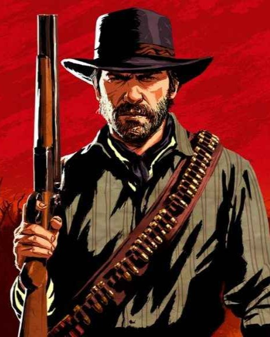
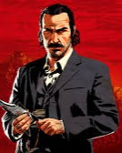
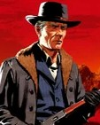
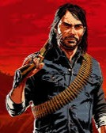
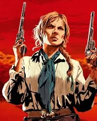
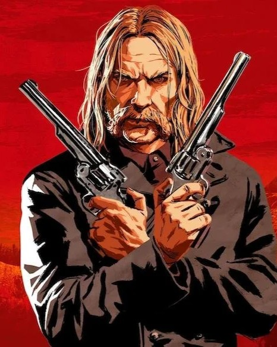

"Estados Unidos, 1899. O fim da era do velho oeste começou. Depois de tudo dar errado durante um roubo em uma cidade do oeste chamada Blackwater, Arthur Morgan e a gangue Van der Linde são forçados a fugir. Com agentes federais e os melhores caçadores de recompensas no seu encalço, a gangue precisa roubar, assaltar e lutar para sobreviver no impiedoso coração dos Estados Unidos. Conforme divisões internas profundas ameaçam despedaçar a gangue, Arthur deve fazer uma escolha entre os seus próprios ideais e a lealdade à gangue que o criou."
Essa é uma simples introdução da história do jogo. Você controla Arthur Morgan, um dos membros mais importantes da gangue Van der Linde e um exímio pistoleiro, enfrentando desafios, tomando decisões morais e explorando um vasto mundo aberto repleto de aventuras e perigos. Ao longo da jornada, Arthur a todo momento se depara com situações que testam sua lealdade, coragem e humanidade. O relacionamento com outros membros da gangue, como Dutch van der Linde e John Marston, influencia diretamente o rumo da história e as escolhas que você faz. O jogo destaca-se pela riqueza de detalhes, narrativa envolvente e ambientação impecável do Velho Oeste. Cada missão, encontro e evento aleatório contribui para a construção de um universo vivo, onde suas ações têm consequências reais. Red Dead Redemption 2 oferece uma experiência única, misturando ação, drama e exploração, tornando-se uma referência entre os jogos de mundo aberto e conquistando milhões de fãs ao redor do mundo.
Alguns dos Personagens Principais
| Imagem | Nome | Descrição |
|---|---|---|
|  | Arthur Morgan | O protagonista do jogo, um membro leal da gangue Van der Linde. Arthur é um pistoleiro habilidoso e enfrenta um conflito interno entre sua lealdade à gangue e seus próprios valores morais. |
|  | Dutch van der Linde | O carismático líder da gangue, que acredita na liberdade e na vida fora das leis da sociedade. Dutch é um estrategista brilhante, mas suas decisões começam a se tornar questionáveis ao longo do jogo. |
|  | Hosea Matthews | O braço direito de Dutch e um dos fundadores da gangue Van der Linde. Hosea é experiente, inteligente e sempre busca evitar conflitos desnecessários, sendo uma figura paterna para Arthur e outros membros. |
|  | John Marston | Um dos primeiros membros da gangue, assim como Arthur. John é o protagonista do primeiro Red Dead Redemption, que se passa após os eventos de Red Dead Redemption 2, e desempenha um papel crucial na história. |
|  | Sadie Adler | Uma mulher forte e determinada que se junta à gangue logo nas primeiras missões do jogo após perder seu marido para uma gangue rival. Sadie é uma fora da lei muito habilidosa e uma personagem memorável. |
|  | Micah Bell | Um membro controverso da gangue, conhecido por sua natureza traiçoeira. Micah desempenha um papel significativo na trama, causando tensão dentro do grupo. |